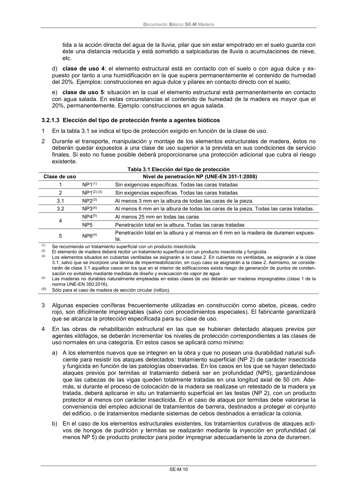

DB-SE-M Madera · edición 2019-12-20 · capa oficial
Documento DB-SE-M-oficial · SHA-256 del PDF 26b5819839ebfda78b0b119c5e76a0a37773b0d763c05688541870075df93718
Copia fiel del PDF fuente · Fuente oficial
Ficha de la disposición en la fuente oficial
Formatos: JSON del segmento · Markdown
3.2.1.2 Clases de uso 1 El concepto de clase de uso está relacionado con la probabilidad de que un elemento estructural sufra ataques por agentes bióticos, y principalmente es función del grado de humedad que llegue a alcanzar durante su vida de servicio. Se definen las siguentes clases de uso. a) clase de uso 1: el elemento estructural está a cubierto, protegido de la intemperie y no expuesto a la humedad. En estas condiciones la madera maciza tiene un contenido de humedad menor que el 20%. Ejemplos: vigas o pilares en el interior de edificios; b) clase de uso 2: el elemento estructural está a cubierto y protegido de la intemperie pero, debido a las condiciones ambientales, se puede dar ocasionalmente un contenido de humedad de la madera mayor que el 20 % en parte o en la totalidad del elemento estructural. Ejemplos: estructura de una piscina cubierta en la que se mantiene una humedad ambiental elevada con condensaciones ocasio- nales y elementos estructurales próximos a conductos de agua; c) clase de uso 3: el elemento estructural se encuentra al descubierto, no en contacto con el suelo. El contenido de humedad de la madera puede superar el 20% Se divide en dos clases; Clase de uso 3.1. El elemento estructural se encuentra al exterior, por encima del suelo y prote- gido, es decir sujeto a medidas de diseño y constructivas destinadas a impedir una exposición excesiva a los efectos directos de la intemperie, inclemencias atmosféricas o fuentes de hume- dad. En estas condiciones la humedad de la madera puede superar ocasionalmente el contenido de humedad del 20%. Ejemplos: viga que vuela al exterior pero que en su zona superior y testas están protegidas por una albardilla o piezas de sacrificio. Clase de uso 3.2. el elemento estructural se encuentra al exterior, por encima del suelo y no pro- tegido. En estas condiciones la humedad de la madera supera frecuentemente el contenido de humedad del 20%. Ejemplos: cualquier elemento cuya cara superior o testa se encuentre some- DocumentoBásico SE-M Madera SE-M 10 tida a la acción directa del agua de la lluvia, pilar que sin estar empotrado en el suelo guarda con éste una distancia reducida y está sometido a salpicaduras de lluvia o acumulaciones de nieve, etc. d) clase de uso 4: el elemento estructural está en contacto con el suelo o con agua dulce y ex- puesto por tanto a una humidificación en la que supera permanentemente el contenido de humedad del 20%. Ejemplos: construcciones en agua dulce y pilares en contacto directo con el suelo; e) clase de uso 5: situación en la cual el elemento estructural está permanentemente en contacto con agua salada. En estas circunstancias el contenido de humedad de la madera es mayor que el 20%, permanentemente. Ejemplo: construcciones en agua salada.
